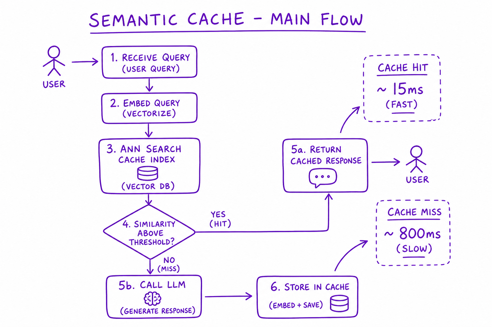
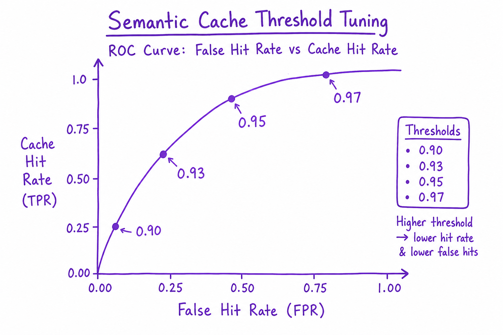
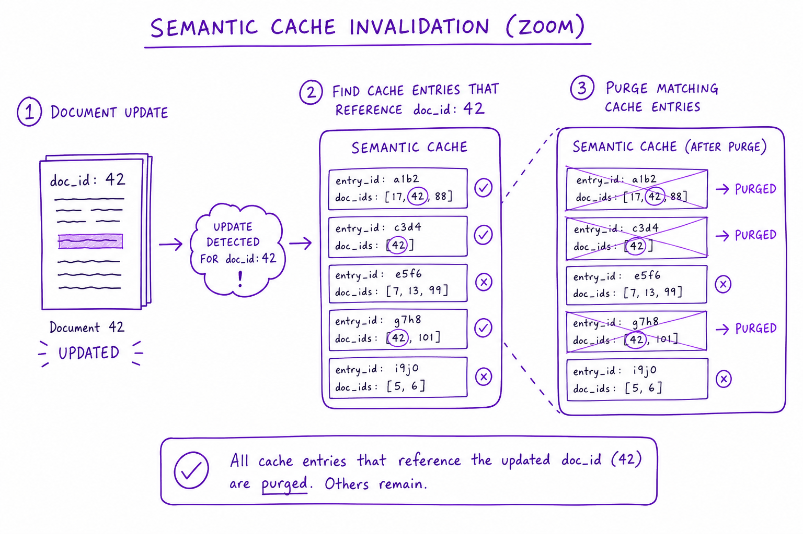

Semantic Cache // Systems
Cache LLM responses by embedding similarity, not exact string match. 40–60% hit rates on support bots — but wrong threshold causes confident wrong answers.

Semantic cache flow: embed incoming query, ANN search cache index, if similarity > threshold return cached response else call LLM and store new entry.
01 — What & Why
LLM inference is expensive. Many user queries are near-duplicates ('reset password' vs 'how do I reset my password'). Semantic cache cuts cost and latency.
01a — Core Concepts
| Term | Definition | Gotcha |
|---|---|---|
| Cache hit | Similar query found above threshold | False hit = wrong answer confidently |
| Threshold | Min cosine similarity for hit | 0.92–0.97 depending on domain |
| TTL | Time-to-live before cache miss forced | Stale policy answers |
01b — API Surface
cache.lookup(query_embedding, org_id) -> { hit, response, score } | miss
cache.store(query, embedding, response, ttl=3600, metadata={sources})
# GPTCache / Redis + vector extension02 — When to Use / When NOT
| Cache | Use When | Skip When |
|---|---|---|
| Semantic | FAQ/support high repeat | Unique analytical queries |
| Exact only | Deterministic API responses | Paraphrase-heavy support |
03 — Architecture
Query -> Embed -> Cache ANN lookup -> [hit: return] [miss: LLM -> store]
04 — Deep Dive: Threshold Tuning

ROC curve: false hit rate vs cache hit rate at thresholds 0.90, 0.93, 0.95, 0.97
Start 0.95. Lower = more hits + more false hits. Evaluate on query pairs labeled same/different intent.
05 — Deep Dive: TTL & Freshness
Policy docs: TTL 1–24h. Product FAQs: 7d. Include source content_hash in cache entry; invalidate on doc update.
06 — Deep Dive: Invalidation

Doc update triggers purge of cache entries whose citations reference changed doc_id
On doc delete/update: purge entries with matching source doc_ids. Bloom filter for fast candidate check.
07 — Deep Dive: Exact + Semantic Two-Tier
L1: exact hash match (Redis). L2: semantic ANN. Exact hits ~5ms; semantic ~15ms; both beat LLM ~800ms.
08 — Deep Dive: Multi-Tenant
Namespace cache by org_id. Never return cache entry from different tenant even if similarity high.
09 — Production & Ops
- Monitor hit rate, false hit rate (thumbs down on cached)
- Cache stampede on cold start — pre-warm top queries
10 — Where It Shows Up
11 — Common Pitfalls
- Threshold too low — wrong answers cached
- No invalidation on doc update
- Cross-tenant cache leakage
- Caching personalized responses under shared key